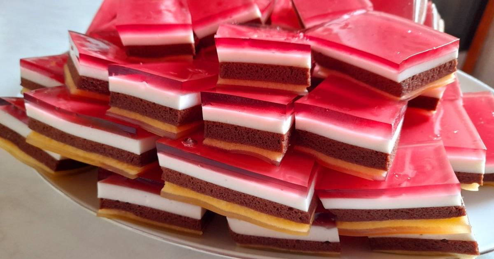

Gumisüti

Elkészítési idő: 60-75 perc
Elkészítés
réteg: 3 tojás sárgáját 1 cs vanilliás cukrot, 5 ek porcukrot habosra keverjük, majd hozzáadjuk a 3 tojásfehérje felvert habját. 1,5 dl vízben 3 ek zselatint forrásig keverjük, hűtőbe tesszük, ha megdermedt, mehet rá a második réteg.
réteg: Ugyanaz, mint az előző, de a tojássárgájához keverünk 1,5 ek kakaót. Ráöntjük az előző rétegre, hűtőőbe tesszük.
réteg: Tejfölt 7 ek porcukorral, vanilliáscukorralelkeverjük, a zselatint hozzáöntjük, mehet a tepsibe, és a hűtőbe.
réteg: 2 dl vízbe 4 ek zselatint forrásig melegítjük, majd 4 dl málnaszörpöt hozzáadunk, tepsibe öntjük.
Pár óra múlva lehet szeletelni.
Biztonságos?
Próbálja meg szerencséjét!!!
Recept keresés